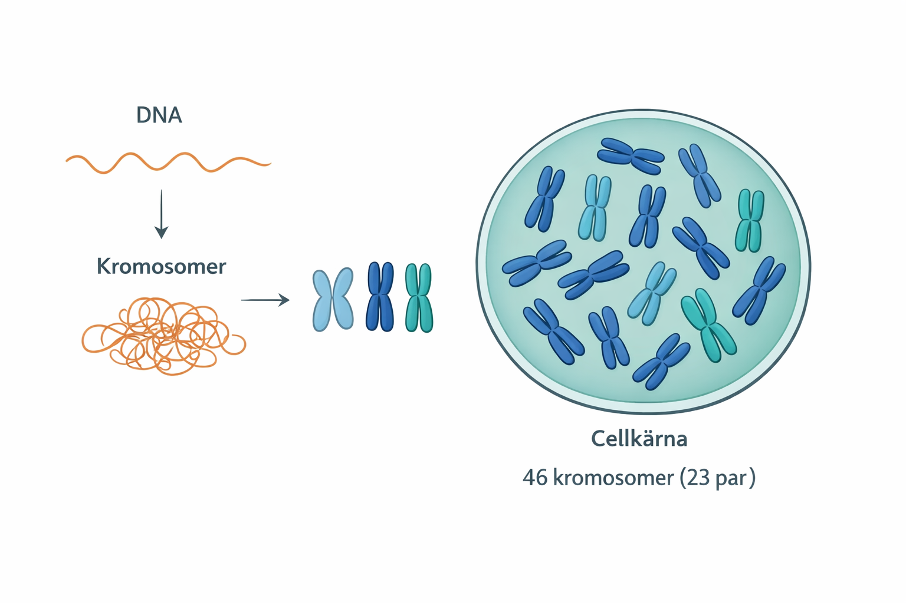
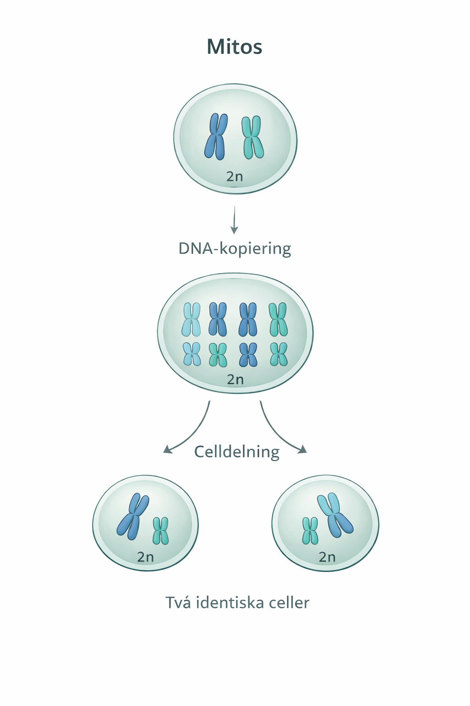

Bakgrund
Varför behöver celler dela sig?
Celldelning är en av livets mest grundläggande processer. Utan den skulle kroppen inte kunna växa, läka sår eller ersätta gamla celler.
Du började som en enda cell – ett befruktat ägg. Från den cellen har det blivit ungefär 37 000 miljarder celler i din kropp. Det sker enbart genom celldelning. Och det slutar inte där: varje sekund bildas miljontals nya celler för att ersätta sådana som dött ut.
📌 Tre skäl till att celler delar sig
- Tillväxt
- – kroppen behöver fler celler för att bli större, särskilt under barn- och ungdomsåren.
- Reparation
- – skadad eller döende vävnad ersätts med nya celler, till exempel vid sårläkning.
- Underhåll
- – många celler lever kort tid och behöver ständigt bytas ut, till exempel röda blodkroppar (lever ca 120 dagar) och tarmceller (lever bara några dagar).
📋 En bra liknelse
Tänk dig celldelning som att kopiera ett viktigt dokument. Originalet (DNA:t) kopieras noggrant, sedan delas kopian och originalet upp i varsitt kuvert. Två identiska kuvert skickas vidare – en ny cell till dig, en ny cell till din granne. Varje ny cell har exakt samma information som den ursprungliga.
Grunden
Kromosomer – cellens paketerade DNA
Innan vi kan förstå celldelningen behöver vi veta hur DNA är organiserat inne i cellen.
DNA är ett mycket långt molekylärt informationsbärande ämne. Om man skulle sträcka ut allt DNA från en enda mänsklig cell skulle det bli nästan två meter långt. Trots detta ryms DNA i cellkärnan, som är så liten att den inte syns för blotta ögat. Detta är möjligt eftersom DNA:t är tätt uppspolat runt proteiner och packat i strukturer som kallas kromosomer. Kromosomer kan ses som ordnade paket av DNA, som gör det lättare för cellen att hantera och skydda den genetiska informationen.
Vanliga mänskliga kroppsceller innehåller 46 kromosomer, organiserade i 23 par. I varje par kommer den ena kromosomen från mamman och den andra från pappan. Tillsammans innehåller de information om samma egenskaper. Celler med en dubbel uppsättning kromosomer kallas diploida celler och betecknas 2n. De flesta av kroppens celler är diploida.

Figur 1. DNA är hårt packat i kromosomer för att få plats i cellkärnan. En mänsklig kroppscell innehåller 46 kromosomer ordnade i 23 par.
🔑 Nyckelbegrepp – Kromosomer
- Kromosom
- – ett tätt hoppackat DNA-sträng. Människan har 46 stycken i varje kroppscell.
- Diploid (2n)
- – cellen har dubbla uppsättningar av kromosomer, alltså 46 i mänskliga celler.
- Kromosompar
- – kromosomer som hör ihop två och två, en från mamma och en från pappa, och som innehåller information om samma egenskaper.
- DNA-kopiering
- – processen där cellen gör en exakt kopia av sitt DNA innan celldelning.
Celldelning
Mitos – i korthet
Mitos är den vanligaste formen av celldelning i kroppen. I detta avsnitt förklaras vad mitos är och vad som händer med cellens arvsmassa när en cell delar sig.
Genom mitos kan kroppen både växa och underhålla sig själv. Nya celler bildas hela tiden för att ersätta celler som skadats eller slutat fungera, till exempel i hud, blod och slemhinnor.
Det viktigaste med mitos är att arvsmassan bevaras. DNA kopieras först, och sedan fördelas kopiorna så att de nya cellerna får exakt samma genetiska information som den ursprungliga cellen. På så sätt kan kroppen bilda nya celler utan att information går förlorad eller förändras.

Figur 1. DNA är hårt packat i kromosomer för att få plats i cellkärnan. En mänsklig kroppscell innehåller 46 kromosomer ordnade i 23 par.
DNA kopieras
Innan cellen delar sig görs en exakt kopia av hela DNA:t. Varje kromosom finns nu i två likadana exemplar.
Arvsmassan fördelas
De kopierade kromosomerna delas upp och separeras, så att de hamnar i var sin del av cellen.
Två identiska celler bildas
Cellen delas i två nya celler. Varje dottercell har samma antal kromosomer och samma arvsmassa som den ursprungliga cellen.
🔑 Det viktigaste att komma ihåg
Mitos ger alltid två genetiskt identiska dotterceller. Hos människan innebär det att varje ny cell får 46 kromosomer. Arvsmassan bevaras oförändrad.
Självbedömning
Kolla att du kan
Försök svara utan att titta i texten. Visa sedan mallsvaret och bocka i om du hade med det viktigaste.